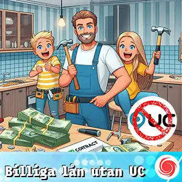

Vi hittar och jämför billiga lån utan UC så att du kan få en snabb och flexibel lösning på din ekonomiska situation.
Vi har hittat lån som är både prisvärda och där långivaren inte använder UC.
Här finns våra aktuella lånealternativ.

Särskilda lån
Frågor och Svar []
- Långivaren med högst beviljandegrad (exempelränta 39.5 %) för april 2025 är Viaconto
- Lån utan UC innebär att långivare inte använder sig av kreditupplysningar från UC, vilket gör att din kreditprofil inte påverkas negativt. Traditionella lån baseras vanligtvis på UC:s upplysningar, vilket kan leda till lägre beviljandegrad för dem med svagare kredit.
- Det beror på långivarens kriterier. Generellt sett är lån utan UC mer tillgängliga för personer med sämre kreditvärdighet, men det är fortfarande viktigt att uppfylla viss ekonomisk stabilitet för att få lån.
- Långivare erbjuder olika låneformer såsom snabblån, mikrolån och webblån utan UC. Varje typ av lån kommer med sina egna villkor och krav, så det är viktigt att jämföra dem innan du ansöker.
- Många långivare erbjuder snabba utbetalningar, vilket innebär att du kan få pengarna på kontot inom några timmar efter att din ansökan har godkänts. Detta kan vara särskilt fördelaktigt vid akuta ekonomiska behov.
- Ja, det stämmer ofta att lån utan UC har högre räntor jämfört med lån som tar hänsyn till UC:s kreditupplysningar. Detta är för att långivarna tar en högre risk när de beviljar lån till personer med sämre kreditvärdighet.
- Ja, många långivare erbjuder lån utan säkerhet där du inte behöver ställa något av värde som garanti. Detta gör det enklare för många låntagare, men lånet kan komma med högre kostnader.
- Ja, medan din UC-historik inte påverkas, kommer din återbetalningshistorik fortfarande att påverka din kreditvärdighet. Om du missar betalningar kan det ha en negativ effekt på din kreditprofil.
- Det kan vara en lösning om du behöver pengar akut och har svårt att få lån via traditionella vägar. Dock bör du vara försiktig med lånebelopp och räntor så att du inte hamnar i en skuldfälla.
- Processen är oftast enkel och går att göra helt online. Du fyller i en ansökan med information om din ekonomi och identitet, och långivaren gör en bedömning innan de ger dig ett erbjudande.
- Ja, det finns flera webbplatser som låter dig jämföra olika lån utan UC. Dessa plattformar visar räntor, avgifter och andra villkor, vilket gör det lättare att hitta det bästa alternativet för dina behov.